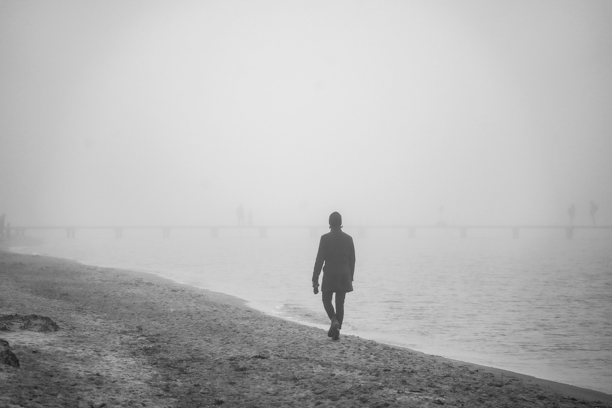

The programme
39 screenings · 24 films · 3 venues
Five strands
Every film plays at least once. Fifteen play twice.
Closing night
Sunday 8 November · 18:30 · Ward Road

Haar
Iona Fraser · Scotland and Norway · 2026 · 96 min · Scottish premiere
Sea fog closes the airfield for six days and a Norwegian ferry crew wait it out in a Fife hotel. Shot on 16mm over two winters in Leven and Bergen.
- Closing gala
- Sun 8 Nov, 18:30, Ward Road
- Also plays
- Sat 7 Nov, 19:00, Ward Road
- After the film
- Iona Fraser in conversation
- Tickets
- £12, or included in the Full Pass
Three venues
396 seats · all within a mile
Passes and tickets
On sale Wed 23 September, 10:00
Full Pass
Every screening including both galas, with a seat held until ten minutes before each film. Priority booking from Monday 21 September.
£96£72 concession
Weekend Pass
Friday 6 to Sunday 8, any venue. The opening and closing galas are not included.
£58£44 concession
Day Pass
Any one day, any venue, subject to seats at the door. Sold from the box office on the day as well as online.
£26£20 concession
Single ticket
One screening. Anyone under 26, and anyone out of work, pays £5 at every screening in the festival.
£9.50£7.50 concession
Box office
Ward Road Picture House, 18 Ward Road, Dundee DD1 1NJ. Open 10:00 to 20:00 daily from Monday 26 October, and one hour before the first screening at each venue.
01382 000 000 · boxoffice@halflight.scot
Access
Every venue is step-free to its stalls; the balcony at The Steps is reached by stair only. Captioned screenings are marked CAP in the timetable. Audio description and a BSL interpreter can be arranged with five days' notice.